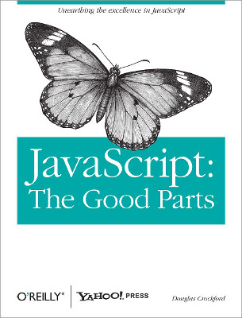
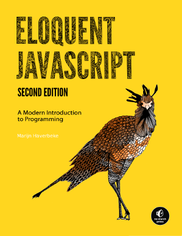
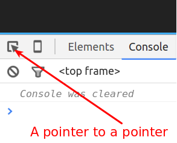

Javascript Starter Kit
Follow along at neontribe.github.io/JavascriptStarterKit
Rupert Redington
rupert@neontribe.co.uk || @rupertredington
“Standing on the shoulders of giants...”
copying and pasting their code.”
Checklist
- A browser
- A text editor
- A terminal
- Node.js
Suggestions
proffered without warrantyChrome is my day to day browser. It should be Firefox but I find Chrome's developer tools more comfortable.
Atom is a good, free, editor. It is made out of web. Vim and Sublime are handy too.
Your choice of terminal is probably largely dicated by your operating system.
I like to use nvm to manage node.js, or you can get it direct from nodejs.org
A Short History
Part One: The Early Days
10 days in May 1995

Brendan Eich worked at Netscape
“They fuck you up, your marketing execs do,
They don't mean to, yet they do.”
Philip Larkin, mostly
They nearly called it Mocha, and then LiveScript
Vilification
- Stupid Name
- Typecasting
- Early Versions were pants...
- ...embedded inconsistently in buggy web browsers
- Some poor design decisions
- Oddly behaved standards body
- Misunderstandings about OOP
Javascript, The Good Parts
Douglas Crockford
Hello World
in a language with no built-in IO
console.log('hello, world');
Language Basics
Javascript for Cats
jsforcats.comMax Ogden
Types: String
'Strings represent text'
"You can quote them either way"
'There\'s no escape from quoting them though.'
'strings can be ' + 'concatenated'
Types: Number
96
0
2.5
2.988e8
Infinity
-Infinity
Comments
// Comments are useful
console.log(1); // They can follow an expression on a line
/**
They can cover multiple lines
like this...
*/
Types: Boolean
true
false
Operators: Arithmetic
4 * 2
10 / 5
6 - 4
10 % 3
Don't worry about operator precendence, just use parentheses liberally.
Operators: typeof
typeof 9
// -> number
typeof 'I\'m a string'
// -> string
typeof NaN
// -> number
Nothing will come of nothing...
0 // Mathematical Zero
'' // An empty string
false // Boolean false
null // Explicit nothing
undefined // Undefined variable
NaN // Not A Number
Operators: Comparison
2 > 1 // -> true
2 <= 1 // -> false
'Buffet' == 'Buffet' // -> true
'Pizza' != 'Pizza' // -> false
'Pizza' > 'Buffet' // -> true
Operators: The oddness of type coercion
8 * null
// → 0
"5" - 1
// → 4
"5" + 1
// → 51
"five " * 2
// → NaN
Operators: loose and strict comparison
0 == false
// true
'' == false
// true
null == undefined
// true
'' == 0
// true
Operators: Logical
&& // logical AND (binary)
|| // logical OR (binary)
! // negation (unary)
? : // conditional (ternary)
Variable Assignment
var greeting = 'Hello World';
var placeholder; // initialized undefined
Variable names can't start with a digit, can't be one of the reserved words, and can't contain puntuation except $ and _
Short Circuiting
var greeting = 'Hello World' || 'Something Else';
// OR short circuits truthily to the left.
// often used to assign defaults.
// if the left hand is truthy the right
// will never even get executed.
// && is the inverse...
Who will save us?
Linters will save us!
- jslint
- jshint
- eslint
A good place to talk about semicolons
Eloquent Javascript
eloquentjavascript.netMarijn Haverbeke

Types: Object
{
key: 'value'
}
Object literals and JSON
Dot notation
Unpredicatable ordering
Types: Array
['one', 2, 'three']
Down with C-style loops
Functions
first class objectsDefinition
function greet (name) {
console.log('Hello ' + name);
}
Naming
(function () {
console.log('Anonymous function');
})(); // IEFE
function named () {
console.log('Named function');
}
named();
var assigned = function () {
console.log('Assigned function');
}
Arguments
(function (arg1) {
console.log(arguments);
})('foo', 'bar');
Why isn't 'arguments' an array?
Hoisting
console.log(greeter('Paul'));
function greeter (name) {
return 'Hello ' + name;
}
Scope
In Javascript* the function is the container of scope
* up 'till es6
var breakfast = 'eggs';
var weight = 10;
function diet () {
var breakfast = 'museli';
weight = weight - 1;
}
diet();
console.log(breakfast);
console.log(weight);
Global Scope
A great evil?
Closures
A beautiful bubble is born.
function announcer(thing) {
return function(){
console.log(thing);
}
}
var rush = announcer('All staff to checkouts, please');
var tealeaf = announcer('There is a caller at the gate');
Methods and the 'this' keyword
var crisis = {
state: 'urgent',
manage: function(){
this.state = 'resolved';
}
};
crisis.manage();
console.log(crisis.state);
Secrets of the Javascript Ninja
John ResigWorkshopper 1
Nodeschool is full of community workshoppers. They are invaluable.
Try out "javascripting" first. If that isn't challenging give "Functional Javascript" a go.
The DOM API
Mozilla Developer Network
MDNFinding Things
var head = document.querySelector('head');
Making Things
var script = document.createElement('script');
Inserting Things
head.appendChild(script);
Events
element.addEventListener
var button = document.createElement('button');
button.innerText = 'Click Me';
button.addEventListener('click', function(evt) {
alert('BOOM!');
});
document.querySelector('body').appendChild(button);
Debugging
The Console API
A collection of methods provided to web applications
Which means you can, if you want, drop them into your own code
What follows are just some highlights from the docs
console.log() and friends
console.log('hello, again');
multiple arguments
var ragbag = ['All', 'manner', ['of'], {stuff: '!'}];
console.log.apply(console, ragbag);
substitutions
var home = 'norwich';
console.log('hello %s', home.toUpperCase());
OMG substitutions
You can format expandable items into your string...
var element = document.querySelector('section');
var object = {expandable: 'me'};
console.log('Elements %o and Objects %O', element, object);
Alarms!
console.warn("You'll ignore this");
console.error("But maybe not this");
console.error() comes with a free stack trace!
Stack trace, you say?
If you want one of your own you can use:
function traceMe () {
console.trace("My first voluntary stack trace");
}
traceMe();
Conditional traces with console.assert
var list = document.querySelectorAll('section');
console.assert(list.length < 40, "Surely too many sections?");
Start a debug session
function debugMe () {
debugger;
}
debugMe();
More about the debugger later...
Tabulating Data
var items = [
{type: 'foo', value: 'baz'},
{type: 'bar', value: 1},
{type: 'foo', value: null}
];
console.table(items);
Timings
console.time('My Timer');
setTimeout(function(){
console.timeEnd('My Timer');
}, 1500);
The Command Line API
Convenience functions for common developer tasks
Only available from within the console itself
Highlights from the docs
$0-4
Select stuff using the pointery thing
Get them in the console with $0 to $4
$electors
$('section');
// Returns THE FIRST section element in the document
$$('code');
// Returns ALL the code elements in the document
$x('html/body/script');
// XPATH!!
$_
Access the value of the last executed expression
Mostly for when you forgot to assign it to a variable...copy()
Copies a string representation to your clipboard
Copying DOM elements gets you HTML
Copying Objects gets you JSON
inspect(el)
Displays an element in the elements panel, try:
inspect($('body section:first-of-type'));
debug(function)
Invokes the debugger when the function supplied is called
monitor(function)
Logs function arguments on call, try the following:
monitor(ragbag.noop);
ragbag.noop('this', 'that', 'the other');
Customers who bought monitor() also bought unmonitor()
monitorEvents(object[, events])
Logs events on an object (normally a DOM element)
monitorEvents(window.document.body, 'contextmenu');
Customers who bought monitorEvents() also bought unmonitorEvents()
Interactive Debugging in the Sources panel
Add a breakpoint
At line 32 of ragbag.js
Run ragbag.tryme('nordev')
ragbag.tryme('nordev');
Break on uncaught errors
Throw me an uncaught error
ragbag.tryme('zzzzzzzzzzzzzzzzzz');
Break on caught errors
Throw me an caught error
ragbag.tryme('xxxxxxxxxxxxxxxxxxx');
Web API: Geolocation
MDN: Using Geolocation
navigator.geolocation.getCurrentPosition(function(pos){
console.log(pos);
});
Welcome to Asyncronous Javascript
XMLHttpRequest
Making web requests from within
var xmlhttp = new XMLHttpRequest();
var host = 'https://gbptm-ui.herokuapp.com';
var path = '/loos/near/-0.08770/51.50824';
xmlhttp.onreadystatechange = function() {
if (xmlhttp.readyState == 4 && xmlhttp.status == 200) {
var data = JSON.parse(xmlhttp.responseText);
console.log(data);
}
};
xmlhttp.open("GET", host + path, true);
xmlhttp.setRequestHeader("Accept", "application/json");
xmlhttp.send();
AJAX - a New Dawn
Workshop 2
LooLister
Your mission is to put together a range of techniques to make a single page application.
- Make an HTML page with an empty body and a script tag
- Using Javascript:
- Add a button
- Attatch a listener on click in which you:
- Get your location and then:
- Make a request to the toilet map API and then:
- Parse the data and then:
- Construct an HTML display of the data
If you're stuck, or you want to cheat, there's a working example here
Extension Task
- Add a real map for each loo using Leaflet.js
jQuery
jQueryJohn Resig
jQuery all the things
- Add jQuery to your page
- Rewrite the XMLHttpRequest using jQuery ajax
- Rewrite the Event handling using jQuery's events system
- Rewrite the DOM manipulation using jQuery's DOM manipulation methods
Framework Explosion
The era of continual innovation?
TODOMVC
ToDoMVC.comAddy Osmani
Node.js
var http = require('http');
var hostname = '127.0.0.1';
var port = 1337;
http.createServer(function(req, res) {
res.writeHead(200, { 'Content-Type': 'text/plain' });
res.end('Hello World\n');
}).listen(port, hostname, function(){
var addr = 'http://' + hostname + ':' + port';
console.log('Server running at ' + addr);
});
Learn You Node
Get hands on with node.js in the "Learn You Node" workshopper from Nodeschool
Where are the promised ROBOTS?
Nodecopter
www.nodecopter.comAndrew Nesbit (et al)
torero ;-)
Johnny-Five
johnny-five.ioSharing Code
How to deal with all those scripts...
The Mighty NPM
- package.json
- CommonJS
- dependency management
- npmjs.org
Browserify
browserify.orgsubstack